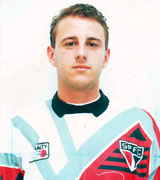
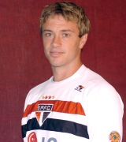
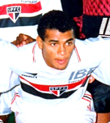

| Ídolos | Nome | Posição | Motivo |
|---|---|---|---|
|  | Rogério Ceni | Goleiro | Maior goleiro artilheiro do mundo, atleta exemplar, campeão mundial com a Seleção Brasileira, bicampeão mundial e da Libertadores, tricampeão brasileiro, capitão e líder incondicional do esquadrão tricolor, Rogério Ceni é a síntese do espírito são-paulino: competente, exigente, obstinado e vencedor. |
|  | Diego Lugano | Zagueiro | Desconhecido, sua contratação não fora aprovada pelo então técnico, Oswaldo de Oliveira, passando a ser conhecido como "O Jogador do Presidente". Aos poucos, jogando com uma grande vontade e espírito de luta, Lugano conquistou a torcida são-paulina. |
|  | Cafu | Lateral | Foi o lateral-direito que mais fez gols no São Paulo, não só pela excelência do seu futebol e do seu preparo físico, como também porque exerceu mais funções ofensivas do que outros, em atendimentos aos esquemas táticos mais modernos. |